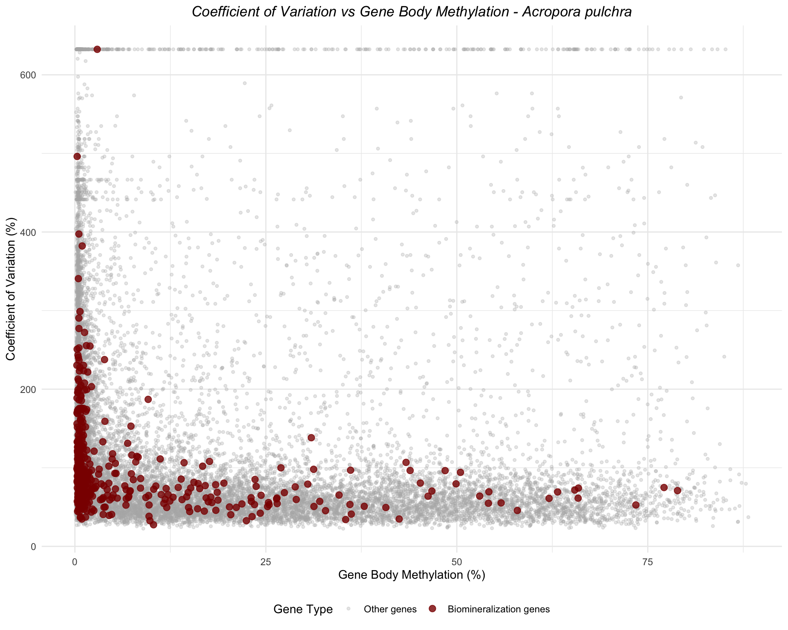
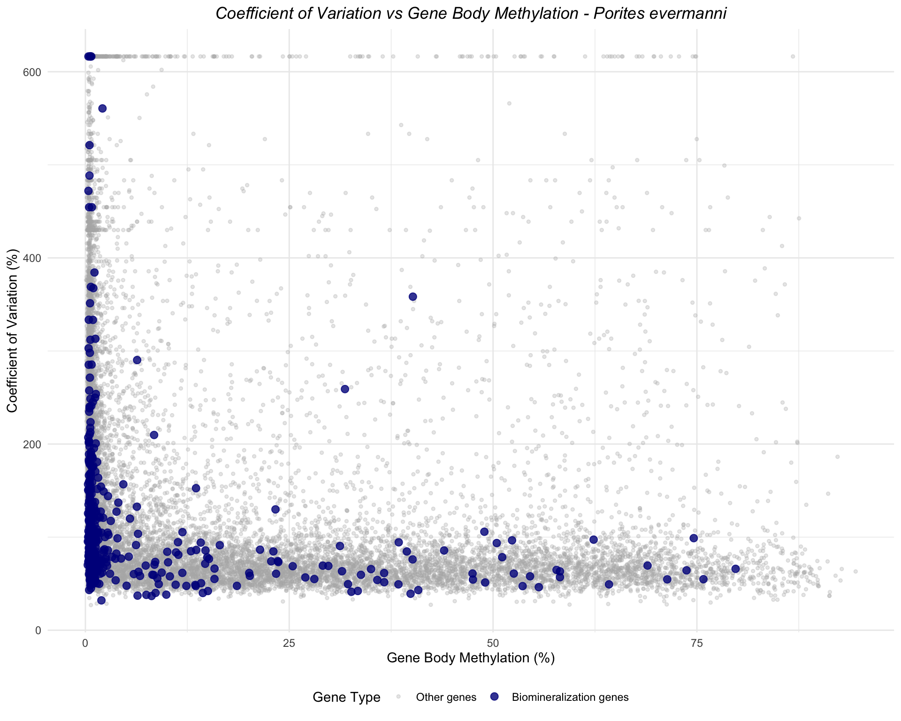
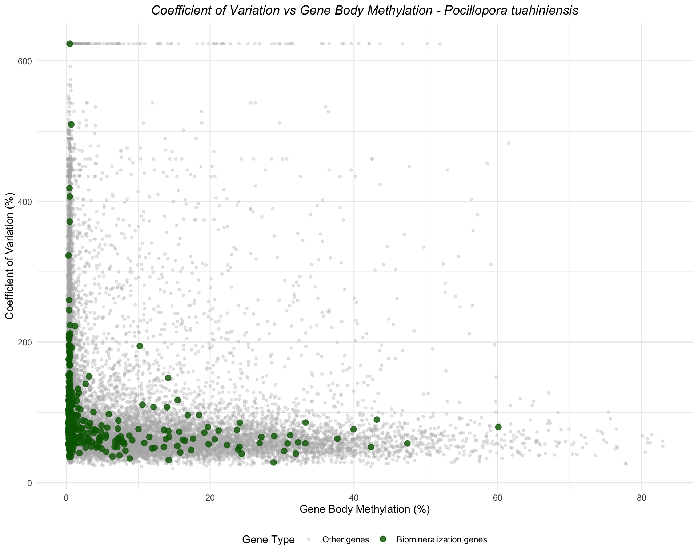
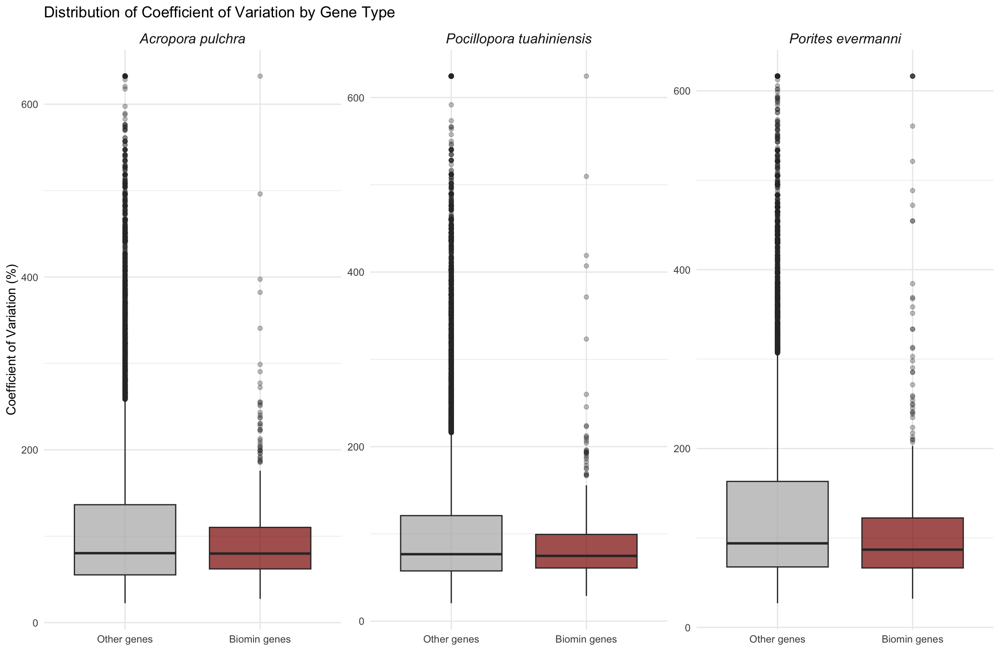
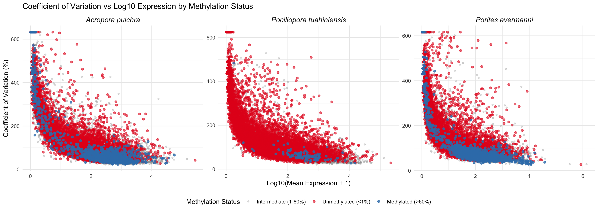

![]()
library(tidyverse)
library(patchwork)Overview
This script calculates the coefficient of variation (CV) of gene expression across samples for each gene and examines the relationship between CV and gene body methylation for three coral species:
- Acropora pulchra
- Porites evermanni
- Pocillopora tuahiniensis
Biomineralization genes are highlighted in each plot.
Coefficient of Variation (CV) is calculated as: CV = (SD / Mean) × 100
This metric captures expression variability relative to mean expression level.
Load Libraries
Load Data
Gene Expression Count Matrices
# Acropora pulchra
apul_expression <- read_csv("https://gannet.fish.washington.edu/gitrepos/urol-e5/timeseries_molecular/D-Apul/output/02.20-D-Apul-RNAseq-alignment-HiSat2/apul-gene_count_matrix.csv")
# Porites evermanni
peve_expression <- read_csv("https://gannet.fish.washington.edu/gitrepos/urol-e5/timeseries_molecular/E-Peve/output/02.20-E-Peve-RNAseq-alignment-HiSat2/peve-gene_count_matrix.csv")
# Pocillopora tuahiniensis
ptua_expression <- read_csv("https://gannet.fish.washington.edu/gitrepos/urol-e5/timeseries_molecular/F-Ptua/output/02.20-F-Ptua-RNAseq-alignment-HiSat2/ptua-gene_count_matrix.csv")Gene Body Methylation Data
# Acropora pulchra
apul_methylation <- read_tsv("https://raw.githubusercontent.com/urol-e5/timeseries-molecular-calcification/refs/heads/main/D-Apul/output/40-Apul-Gene-Methylation/Apul-gene-methylation_75pct.tsv")
# Porites evermanni
peve_methylation <- read_tsv("https://raw.githubusercontent.com/urol-e5/timeseries-molecular-calcification/refs/heads/main/E-Peve/output/15-Peve-Gene-Methylation/Peve-gene-methylation_75pct.tsv")
# Pocillopora tuahiniensis
ptua_methylation <- read_tsv("https://raw.githubusercontent.com/urol-e5/timeseries-molecular-calcification/refs/heads/main/F-Ptua/output/09-Ptua-Gene-Methylation/Ptua-gene-methylation_75pct.tsv")Biomineralization Gene Lists
# Acropora pulchra
apul_biomin <- read_csv("https://raw.githubusercontent.com/urol-e5/timeseries-molecular-calcification/refs/heads/main/M-multi-species/output/33-biomin-pathway-counts/apul_biomin_counts.csv")
# Porites evermanni
peve_biomin <- read_csv("https://raw.githubusercontent.com/urol-e5/timeseries-molecular-calcification/refs/heads/main/M-multi-species/output/33-biomin-pathway-counts/peve_biomin_counts.csv")
# Pocillopora tuahiniensis
ptua_biomin <- read_csv("https://raw.githubusercontent.com/urol-e5/timeseries-molecular-calcification/refs/heads/main/M-multi-species/output/33-biomin-pathway-counts/ptua_biomin_counts.csv")Calculate Coefficient of Variation
Function to Calculate CV
# CV = (standard deviation / mean) * 100
calculate_cv <- function(x) {
mean_val <- mean(x, na.rm = TRUE)
sd_val <- sd(x, na.rm = TRUE)
if (mean_val == 0) {
return(NA)
}
return((sd_val / mean_val) * 100)
}Acropora pulchra
# Calculate CV and mean expression across samples for each gene
apul_expression_stats <- apul_expression %>%
pivot_longer(-gene_id, names_to = "sample", values_to = "count") %>%
group_by(gene_id) %>%
summarize(
mean_expression = mean(count, na.rm = TRUE),
sd_expression = sd(count, na.rm = TRUE),
cv_expression = calculate_cv(count)
) %>%
filter(!is.na(cv_expression), cv_expression < Inf) # Remove genes with zero mean
# Calculate mean methylation across samples for each gene
apul_methylation_mean <- apul_methylation %>%
pivot_longer(-gene_id, names_to = "sample", values_to = "methylation") %>%
group_by(gene_id) %>%
summarize(mean_methylation = mean(methylation, na.rm = TRUE))
# Join expression and methylation data
apul_combined <- apul_expression_stats %>%
inner_join(apul_methylation_mean, by = "gene_id")
# Get biomin gene IDs
apul_biomin_genes <- apul_biomin %>%
pull(gene_id) %>%
unique()
# Add biomin indicator
apul_combined <- apul_combined %>%
mutate(is_biomin = gene_id %in% apul_biomin_genes)
cat("Acropora pulchra:\n")Acropora pulchra:cat(" Total genes with CV and methylation:", nrow(apul_combined), "\n") Total genes with CV and methylation: 20666 cat(" Biomineralization genes:", sum(apul_combined$is_biomin), "\n") Biomineralization genes: 484 Porites evermanni
# Calculate CV and mean expression across samples for each gene
peve_expression_stats <- peve_expression %>%
pivot_longer(-gene_id, names_to = "sample", values_to = "count") %>%
group_by(gene_id) %>%
summarize(
mean_expression = mean(count, na.rm = TRUE),
sd_expression = sd(count, na.rm = TRUE),
cv_expression = calculate_cv(count)
) %>%
filter(!is.na(cv_expression), cv_expression < Inf)
# Calculate mean methylation across samples for each gene
peve_methylation_mean <- peve_methylation %>%
pivot_longer(-gene_id, names_to = "sample", values_to = "methylation") %>%
group_by(gene_id) %>%
summarize(mean_methylation = mean(methylation, na.rm = TRUE))
# Join expression and methylation data
peve_combined <- peve_expression_stats %>%
inner_join(peve_methylation_mean, by = "gene_id")
# Get biomin gene IDs - add "gene-" prefix to match expression data format
peve_biomin_genes <- peve_biomin %>%
pull(gene_id) %>%
unique() %>%
paste0("gene-", .)
# Add biomin indicator
peve_combined <- peve_combined %>%
mutate(is_biomin = gene_id %in% peve_biomin_genes)
cat("Porites evermanni:\n")Porites evermanni:cat(" Total genes with CV and methylation:", nrow(peve_combined), "\n") Total genes with CV and methylation: 19855 cat(" Biomineralization genes:", sum(peve_combined$is_biomin), "\n") Biomineralization genes: 479 Pocillopora tuahiniensis
# Calculate CV and mean expression across samples for each gene
ptua_expression_stats <- ptua_expression %>%
pivot_longer(-gene_id, names_to = "sample", values_to = "count") %>%
group_by(gene_id) %>%
summarize(
mean_expression = mean(count, na.rm = TRUE),
sd_expression = sd(count, na.rm = TRUE),
cv_expression = calculate_cv(count)
) %>%
filter(!is.na(cv_expression), cv_expression < Inf)
# Calculate mean methylation across samples for each gene
ptua_methylation_mean <- ptua_methylation %>%
pivot_longer(-gene_id, names_to = "sample", values_to = "methylation") %>%
group_by(gene_id) %>%
summarize(mean_methylation = mean(methylation, na.rm = TRUE))
# Join expression and methylation data
ptua_combined <- ptua_expression_stats %>%
inner_join(ptua_methylation_mean, by = "gene_id")
# Get biomin gene IDs - add "gene-" prefix to match expression data format
ptua_biomin_genes <- ptua_biomin %>%
pull(gene_id) %>%
unique() %>%
paste0("gene-", .)
# Add biomin indicator
ptua_combined <- ptua_combined %>%
mutate(is_biomin = gene_id %in% ptua_biomin_genes)
cat("Pocillopora tuahiniensis:\n")Pocillopora tuahiniensis:cat(" Total genes with CV and methylation:", nrow(ptua_combined), "\n") Total genes with CV and methylation: 22609 cat(" Biomineralization genes:", sum(ptua_combined$is_biomin), "\n") Biomineralization genes: 459 Create Plots
Acropora pulchra
ggplot(apul_combined, aes(x = mean_methylation, y = cv_expression, color = is_biomin)) +
geom_point(data = filter(apul_combined, !is_biomin), alpha = 0.3, size = 1) +
geom_point(data = filter(apul_combined, is_biomin), alpha = 0.8, size = 2.5) +
scale_color_manual(values = c("FALSE" = "gray70", "TRUE" = "darkred"),
labels = c("FALSE" = "Other genes", "TRUE" = "Biomineralization genes"),
name = "Gene Type") +
labs(title = "Coefficient of Variation vs Gene Body Methylation - Acropora pulchra",
x = "Gene Body Methylation (%)",
y = "Coefficient of Variation (%)") +
theme_minimal() +
theme(legend.position = "bottom",
plot.title = element_text(face = "italic", hjust = 0.5))
Porites evermanni
ggplot(peve_combined, aes(x = mean_methylation, y = cv_expression, color = is_biomin)) +
geom_point(data = filter(peve_combined, !is_biomin), alpha = 0.3, size = 1) +
geom_point(data = filter(peve_combined, is_biomin), alpha = 0.8, size = 2.5) +
scale_color_manual(values = c("FALSE" = "gray70", "TRUE" = "darkblue"),
labels = c("FALSE" = "Other genes", "TRUE" = "Biomineralization genes"),
name = "Gene Type") +
labs(title = "Coefficient of Variation vs Gene Body Methylation - Porites evermanni",
x = "Gene Body Methylation (%)",
y = "Coefficient of Variation (%)") +
theme_minimal() +
theme(legend.position = "bottom",
plot.title = element_text(face = "italic", hjust = 0.5))
Pocillopora tuahiniensis
ggplot(ptua_combined, aes(x = mean_methylation, y = cv_expression, color = is_biomin)) +
geom_point(data = filter(ptua_combined, !is_biomin), alpha = 0.3, size = 1) +
geom_point(data = filter(ptua_combined, is_biomin), alpha = 0.8, size = 2.5) +
scale_color_manual(values = c("FALSE" = "gray70", "TRUE" = "darkgreen"),
labels = c("FALSE" = "Other genes", "TRUE" = "Biomineralization genes"),
name = "Gene Type") +
labs(title = "Coefficient of Variation vs Gene Body Methylation - Pocillopora tuahiniensis",
x = "Gene Body Methylation (%)",
y = "Coefficient of Variation (%)") +
theme_minimal() +
theme(legend.position = "bottom",
plot.title = element_text(face = "italic", hjust = 0.5))
Combined Panel Plot
# Add species identifier to each dataset
apul_combined <- apul_combined %>% mutate(species = "Acropora pulchra")
peve_combined <- peve_combined %>% mutate(species = "Porites evermanni")
ptua_combined <- ptua_combined %>% mutate(species = "Pocillopora tuahiniensis")
# Combine all data
all_combined <- bind_rows(apul_combined, peve_combined, ptua_combined)
# Create faceted plot
ggplot(all_combined, aes(x = mean_methylation, y = cv_expression, color = is_biomin)) +
geom_point(data = filter(all_combined, !is_biomin), alpha = 0.3, size = 1) +
geom_point(data = filter(all_combined, is_biomin), alpha = 0.8, size = 2.5) +
scale_color_manual(values = c("FALSE" = "gray70", "TRUE" = "darkred"),
labels = c("FALSE" = "Other genes", "TRUE" = "Biomineralization genes"),
name = "Gene Type") +
facet_wrap(~species, scales = "free") +
labs(title = "Coefficient of Variation vs Gene Body Methylation",
x = "Gene Body Methylation (%)",
y = "Coefficient of Variation (%)") +
theme_minimal() +
theme(legend.position = "bottom",
strip.text = element_text(face = "italic", size = 12))
Summary Statistics
# Summary for each species
summary_stats <- all_combined %>%
group_by(species, is_biomin) %>%
summarize(
n_genes = n(),
mean_cv = mean(cv_expression, na.rm = TRUE),
median_cv = median(cv_expression, na.rm = TRUE),
sd_cv = sd(cv_expression, na.rm = TRUE),
mean_methylation = mean(mean_methylation, na.rm = TRUE),
sd_methylation = sd(mean_methylation, na.rm = TRUE),
.groups = "drop"
)
summary_stats %>%
knitr::kable(digits = 2,
col.names = c("Species", "Biomin Gene", "N", "Mean CV", "Median CV", "SD CV", "Mean Meth", "SD Meth"))| Species | Biomin Gene | N | Mean CV | Median CV | SD CV | Mean Meth | SD Meth |
|---|---|---|---|---|---|---|---|
| Acropora pulchra | FALSE | 20182 | 125.32 | 80.37 | 122.36 | 15.57 | NA |
| Acropora pulchra | TRUE | 484 | 97.89 | 79.92 | 60.60 | 7.07 | NA |
| Pocillopora tuahiniensis | FALSE | 22150 | 115.05 | 76.72 | 107.76 | 7.61 | NA |
| Pocillopora tuahiniensis | TRUE | 459 | 89.32 | 74.81 | 56.38 | 3.74 | NA |
| Porites evermanni | FALSE | 19376 | 145.34 | 93.99 | 128.20 | 15.28 | NA |
| Porites evermanni | TRUE | 479 | 114.25 | 86.93 | 89.49 | 6.76 | NA |
Correlation Analysis
cat("=== CORRELATION: CV vs GENE BODY METHYLATION ===\n\n")=== CORRELATION: CV vs GENE BODY METHYLATION ===# Acropora pulchra
cat("--- Acropora pulchra ---\n")--- Acropora pulchra ---cor_apul <- cor.test(apul_combined$cv_expression, apul_combined$mean_methylation,
method = "spearman", use = "complete.obs")
cat(" Spearman rho =", round(cor_apul$estimate, 3), ", p =", format(cor_apul$p.value, digits = 3), "\n") Spearman rho = -0.386 , p = 0 cat(" Biomin genes only:\n") Biomin genes only:apul_biomin_only <- filter(apul_combined, is_biomin)
if(nrow(apul_biomin_only) > 3) {
cor_apul_biomin <- cor.test(apul_biomin_only$cv_expression, apul_biomin_only$mean_methylation,
method = "spearman", use = "complete.obs")
cat(" Spearman rho =", round(cor_apul_biomin$estimate, 3), ", p =", format(cor_apul_biomin$p.value, digits = 3), "\n\n")
} else {
cat(" Not enough biomin genes for correlation\n\n")
} Spearman rho = -0.38 , p = 0 # Porites evermanni
cat("--- Porites evermanni ---\n")--- Porites evermanni ---cor_peve <- cor.test(peve_combined$cv_expression, peve_combined$mean_methylation,
method = "spearman", use = "complete.obs")
cat(" Spearman rho =", round(cor_peve$estimate, 3), ", p =", format(cor_peve$p.value, digits = 3), "\n") Spearman rho = -0.45 , p = 0 cat(" Biomin genes only:\n") Biomin genes only:peve_biomin_only <- filter(peve_combined, is_biomin)
if(nrow(peve_biomin_only) > 3) {
cor_peve_biomin <- cor.test(peve_biomin_only$cv_expression, peve_biomin_only$mean_methylation,
method = "spearman", use = "complete.obs")
cat(" Spearman rho =", round(cor_peve_biomin$estimate, 3), ", p =", format(cor_peve_biomin$p.value, digits = 3), "\n\n")
} else {
cat(" Not enough biomin genes for correlation\n\n")
} Spearman rho = -0.403 , p = 3.61e-20 # Pocillopora tuahiniensis
cat("--- Pocillopora tuahiniensis ---\n")--- Pocillopora tuahiniensis ---cor_ptua <- cor.test(ptua_combined$cv_expression, ptua_combined$mean_methylation,
method = "spearman", use = "complete.obs")
cat(" Spearman rho =", round(cor_ptua$estimate, 3), ", p =", format(cor_ptua$p.value, digits = 3), "\n") Spearman rho = -0.409 , p = 0 cat(" Biomin genes only:\n") Biomin genes only:ptua_biomin_only <- filter(ptua_combined, is_biomin)
if(nrow(ptua_biomin_only) > 3) {
cor_ptua_biomin <- cor.test(ptua_biomin_only$cv_expression, ptua_biomin_only$mean_methylation,
method = "spearman", use = "complete.obs")
cat(" Spearman rho =", round(cor_ptua_biomin$estimate, 3), ", p =", format(cor_ptua_biomin$p.value, digits = 3), "\n")
} else {
cat(" Not enough biomin genes for correlation\n")
} Spearman rho = -0.314 , p = 7.65e-12 CV Distribution Comparison
# Boxplot comparing CV distribution between biomin and other genes
ggplot(all_combined, aes(x = is_biomin, y = cv_expression, fill = is_biomin)) +
geom_boxplot(alpha = 0.7, outlier.alpha = 0.3) +
scale_fill_manual(values = c("FALSE" = "gray70", "TRUE" = "darkred"),
labels = c("FALSE" = "Other genes", "TRUE" = "Biomineralization genes"),
name = "Gene Type") +
scale_x_discrete(labels = c("FALSE" = "Other genes", "TRUE" = "Biomin genes")) +
facet_wrap(~species, scales = "free_y") +
labs(title = "Distribution of Coefficient of Variation by Gene Type",
x = "",
y = "Coefficient of Variation (%)") +
theme_minimal() +
theme(legend.position = "none",
strip.text = element_text(face = "italic", size = 12))
Statistical Tests: CV Comparison
cat("=== WILCOXON TEST: CV of Biomin vs Other Genes ===\n\n")=== WILCOXON TEST: CV of Biomin vs Other Genes ===# Acropora pulchra
cat("--- Acropora pulchra ---\n")--- Acropora pulchra ---apul_test <- wilcox.test(cv_expression ~ is_biomin, data = apul_combined)
cat(" W =", apul_test$statistic, ", p =", format(apul_test$p.value, digits = 3), "\n") W = 4872457 , p = 0.929 cat(" Median CV (Other):", round(median(filter(apul_combined, !is_biomin)$cv_expression, na.rm = TRUE), 2), "\n") Median CV (Other): 80.37 cat(" Median CV (Biomin):", round(median(filter(apul_combined, is_biomin)$cv_expression, na.rm = TRUE), 2), "\n\n") Median CV (Biomin): 79.92 # Porites evermanni
cat("--- Porites evermanni ---\n")--- Porites evermanni ---peve_test <- wilcox.test(cv_expression ~ is_biomin, data = peve_combined)
cat(" W =", peve_test$statistic, ", p =", format(peve_test$p.value, digits = 3), "\n") W = 5114222 , p = 0.000132 cat(" Median CV (Other):", round(median(filter(peve_combined, !is_biomin)$cv_expression, na.rm = TRUE), 2), "\n") Median CV (Other): 93.99 cat(" Median CV (Biomin):", round(median(filter(peve_combined, is_biomin)$cv_expression, na.rm = TRUE), 2), "\n\n") Median CV (Biomin): 86.93 # Pocillopora tuahiniensis
cat("--- Pocillopora tuahiniensis ---\n")--- Pocillopora tuahiniensis ---ptua_test <- wilcox.test(cv_expression ~ is_biomin, data = ptua_combined)
cat(" W =", ptua_test$statistic, ", p =", format(ptua_test$p.value, digits = 3), "\n") W = 5322898 , p = 0.0836 cat(" Median CV (Other):", round(median(filter(ptua_combined, !is_biomin)$cv_expression, na.rm = TRUE), 2), "\n") Median CV (Other): 76.72 cat(" Median CV (Biomin):", round(median(filter(ptua_combined, is_biomin)$cv_expression, na.rm = TRUE), 2), "\n") Median CV (Biomin): 74.81 CV vs Log10 Expression by Methylation Status
This section examines the relationship between coefficient of variation (CV) and log10-transformed mean expression, categorizing genes by their methylation status:
- Methylated: Gene body methylation > 60%
- Unmethylated: Gene body methylation < 1%
- Intermediate: Gene body methylation between 1% and 60%
Categorize Genes by Methylation Status
# Add methylation category and log expression to combined data
all_combined <- all_combined %>%
mutate(
log_expression = log10(mean_expression + 1),
methylation_status = case_when(
mean_methylation > 60 ~ "Methylated (>60%)",
mean_methylation < 1 ~ "Unmethylated (<1%)",
TRUE ~ "Intermediate (1-60%)"
),
methylation_status = factor(methylation_status,
levels = c("Unmethylated (<1%)",
"Intermediate (1-60%)",
"Methylated (>60%)"))
)
# Summary of methylation categories by species
cat("=== GENE COUNTS BY METHYLATION STATUS ===\n\n")=== GENE COUNTS BY METHYLATION STATUS ===all_combined %>%
count(species, methylation_status) %>%
pivot_wider(names_from = methylation_status, values_from = n) %>%
knitr::kable()| species | Unmethylated (<1%) | Intermediate (1-60%) | Methylated (>60%) |
|---|---|---|---|
| Acropora pulchra | 7839 | 11662 | 1165 |
| Pocillopora tuahiniensis | 11458 | 11054 | 97 |
| Porites evermanni | 8366 | 10063 | 1426 |
CV vs Log10 Expression - All Species Combined
ggplot() +
# Plot intermediate genes first (background)
geom_point(data = filter(all_combined, methylation_status == "Intermediate (1-60%)"),
aes(x = log_expression, y = cv_expression, color = methylation_status),
alpha = 0.3, size = 1) +
# Plot unmethylated genes
geom_point(data = filter(all_combined, methylation_status == "Unmethylated (<1%)"),
aes(x = log_expression, y = cv_expression, color = methylation_status),
alpha = 0.6, size = 1.5) +
# Plot methylated genes on top
geom_point(data = filter(all_combined, methylation_status == "Methylated (>60%)"),
aes(x = log_expression, y = cv_expression, color = methylation_status),
alpha = 0.8, size = 1.5) +
scale_color_manual(values = c("Unmethylated (<1%)" = "#E41A1C",
"Intermediate (1-60%)" = "gray60",
"Methylated (>60%)" = "#377EB8"),
name = "Methylation Status") +
labs(title = "Coefficient of Variation vs Log10 Expression by Methylation Status",
x = "Log10(Mean Expression + 1)",
y = "Coefficient of Variation (%)") +
theme_minimal() +
theme(legend.position = "bottom")
CV vs Log10 Expression - Faceted by Species
ggplot() +
# Plot intermediate genes first (background)
geom_point(data = filter(all_combined, methylation_status == "Intermediate (1-60%)"),
aes(x = log_expression, y = cv_expression, color = methylation_status),
alpha = 0.3, size = 1) +
# Plot unmethylated genes
geom_point(data = filter(all_combined, methylation_status == "Unmethylated (<1%)"),
aes(x = log_expression, y = cv_expression, color = methylation_status),
alpha = 0.6, size = 1.5) +
# Plot methylated genes on top
geom_point(data = filter(all_combined, methylation_status == "Methylated (>60%)"),
aes(x = log_expression, y = cv_expression, color = methylation_status),
alpha = 0.8, size = 1.5) +
scale_color_manual(values = c("Unmethylated (<1%)" = "#E41A1C",
"Intermediate (1-60%)" = "gray60",
"Methylated (>60%)" = "#377EB8"),
name = "Methylation Status") +
facet_wrap(~species, scales = "free") +
labs(title = "Coefficient of Variation vs Log10 Expression by Methylation Status",
x = "Log10(Mean Expression + 1)",
y = "Coefficient of Variation (%)") +
theme_minimal() +
theme(legend.position = "bottom",
strip.text = element_text(face = "italic", size = 12))
CV vs Log10 Expression - Highlighting Methylated and Unmethylated Only
ggplot() +
# Plot intermediate genes as background
geom_point(data = filter(all_combined, methylation_status == "Intermediate (1-60%)"),
aes(x = log_expression, y = cv_expression),
color = "gray85", alpha = 0.3, size = 0.5) +
# Plot unmethylated genes
geom_point(data = filter(all_combined, methylation_status == "Unmethylated (<1%)"),
aes(x = log_expression, y = cv_expression, color = methylation_status),
alpha = 0.6, size = 1.5) +
# Plot methylated genes on top
geom_point(data = filter(all_combined, methylation_status == "Methylated (>60%)"),
aes(x = log_expression, y = cv_expression, color = methylation_status),
alpha = 0.8, size = 2) +
scale_color_manual(values = c("Unmethylated (<1%)" = "#E41A1C",
"Methylated (>60%)" = "#377EB8"),
name = "Methylation Status") +
facet_wrap(~species, scales = "free") +
labs(title = "CV vs Log10 Expression: Methylated vs Unmethylated Genes",
subtitle = "Intermediate methylation genes shown in light gray background",
x = "Log10(Mean Expression + 1)",
y = "Coefficient of Variation (%)") +
theme_minimal() +
theme(legend.position = "bottom",
strip.text = element_text(face = "italic", size = 12))
Expression Distribution: Methylated vs Unmethylated Genes
# Filter to only methylated and unmethylated genes
meth_unmeth_only <- all_combined %>%
filter(methylation_status %in% c("Methylated (>60%)", "Unmethylated (<1%)"))
# Histogram - All species combined
p_combined <- ggplot(meth_unmeth_only, aes(x = log_expression, fill = methylation_status)) +
geom_histogram(alpha = 0.6, position = "identity", bins = 50) +
scale_fill_manual(values = c("Unmethylated (<1%)" = "#E41A1C",
"Methylated (>60%)" = "#377EB8"),
name = "Methylation Status") +
labs(title = "Distribution of Gene Expression: Methylated vs Unmethylated Genes",
x = "Log10(Mean Expression + 1)",
y = "Frequency (Number of Genes)") +
theme_minimal() +
theme(legend.position = "bottom")
# Histogram - Faceted by species
p_faceted <- ggplot(meth_unmeth_only, aes(x = log_expression, fill = methylation_status)) +
geom_histogram(alpha = 0.6, position = "identity", bins = 40) +
scale_fill_manual(values = c("Unmethylated (<1%)" = "#E41A1C",
"Methylated (>60%)" = "#377EB8"),
name = "Methylation Status") +
facet_wrap(~species, scales = "free_y", ncol = 1) +
labs(title = "Distribution of Gene Expression by Species",
x = "Log10(Mean Expression + 1)",
y = "Frequency (Number of Genes)") +
theme_minimal() +
theme(legend.position = "bottom",
strip.text = element_text(face = "italic", size = 12))
p_combined
p_faceted
Expression Distribution - Density Plot
ggplot(meth_unmeth_only, aes(x = log_expression, fill = methylation_status, color = methylation_status)) +
geom_density(alpha = 0.4) +
scale_fill_manual(values = c("Unmethylated (<1%)" = "#E41A1C",
"Methylated (>60%)" = "#377EB8"),
name = "Methylation Status") +
scale_color_manual(values = c("Unmethylated (<1%)" = "#E41A1C",
"Methylated (>60%)" = "#377EB8"),
name = "Methylation Status") +
facet_wrap(~species, scales = "free_y") +
labs(title = "Density Distribution of Gene Expression: Methylated vs Unmethylated",
x = "Log10(Mean Expression + 1)",
y = "Density") +
theme_minimal() +
theme(legend.position = "bottom",
strip.text = element_text(face = "italic", size = 12))
Summary Statistics by Methylation Status
methylation_summary <- all_combined %>%
group_by(species, methylation_status) %>%
summarize(
n_genes = n(),
mean_cv = mean(cv_expression, na.rm = TRUE),
median_cv = median(cv_expression, na.rm = TRUE),
mean_log_expr = mean(log_expression, na.rm = TRUE),
median_log_expr = median(log_expression, na.rm = TRUE),
.groups = "drop"
)
methylation_summary %>%
knitr::kable(digits = 2,
col.names = c("Species", "Methylation Status", "N", "Mean CV", "Median CV",
"Mean Log Expr", "Median Log Expr"))| Species | Methylation Status | N | Mean CV | Median CV | Mean Log Expr | Median Log Expr |
|---|---|---|---|---|---|---|
| Acropora pulchra | Unmethylated (<1%) | 7839 | 150.75 | 108.16 | 1.50 | 1.49 |
| Acropora pulchra | Intermediate (1-60%) | 11662 | 107.40 | 67.56 | 2.10 | 2.29 |
| Acropora pulchra | Methylated (>60%) | 1165 | 122.30 | 62.07 | 2.13 | 2.46 |
| Pocillopora tuahiniensis | Unmethylated (<1%) | 11458 | 139.00 | 96.10 | 1.54 | 1.55 |
| Pocillopora tuahiniensis | Intermediate (1-60%) | 11054 | 89.57 | 63.12 | 2.19 | 2.31 |
| Pocillopora tuahiniensis | Methylated (>60%) | 97 | 66.89 | 58.94 | 2.52 | 2.54 |
| Porites evermanni | Unmethylated (<1%) | 8366 | 181.81 | 125.91 | 1.16 | 1.09 |
| Porites evermanni | Intermediate (1-60%) | 10063 | 119.58 | 78.21 | 1.74 | 1.84 |
| Porites evermanni | Methylated (>60%) | 1426 | 102.70 | 68.32 | 1.91 | 1.98 |
Statistical Tests: CV by Methylation Status
cat("=== KRUSKAL-WALLIS TEST: CV across Methylation Status ===\n\n")=== KRUSKAL-WALLIS TEST: CV across Methylation Status ===for(sp in unique(all_combined$species)) {
cat("---", sp, "---\n")
sp_data <- filter(all_combined, species == sp)
kw_test <- kruskal.test(cv_expression ~ methylation_status, data = sp_data)
cat(" Kruskal-Wallis chi-squared =", round(kw_test$statistic, 2),
", df =", kw_test$parameter, ", p =", format(kw_test$p.value, digits = 3), "\n")
# Pairwise Wilcoxon tests
cat(" Pairwise Wilcoxon tests:\n")
pw_test <- pairwise.wilcox.test(sp_data$cv_expression, sp_data$methylation_status,
p.adjust.method = "bonferroni")
print(pw_test$p.value)
cat("\n")
}--- Acropora pulchra ---
Kruskal-Wallis chi-squared = 2367.2 , df = 2 , p = 0
Pairwise Wilcoxon tests:
Unmethylated (<1%) Intermediate (1-60%)
Intermediate (1-60%) 0.00000e+00 NA
Methylated (>60%) 1.64382e-123 0.001130075
--- Porites evermanni ---
Kruskal-Wallis chi-squared = 3048.76 , df = 2 , p = 0
Pairwise Wilcoxon tests:
Unmethylated (<1%) Intermediate (1-60%)
Intermediate (1-60%) 0.000000e+00 NA
Methylated (>60%) 1.507402e-273 3.971524e-26
--- Pocillopora tuahiniensis ---
Kruskal-Wallis chi-squared = 3697.56 , df = 2 , p = 0
Pairwise Wilcoxon tests:
Unmethylated (<1%) Intermediate (1-60%)
Intermediate (1-60%) 0.000000e+00 NA
Methylated (>60%) 1.904952e-26 0.07566394Correlation: CV vs Expression by Methylation Status
cat("=== SPEARMAN CORRELATION: CV vs Log10 Expression by Methylation Status ===\n\n")=== SPEARMAN CORRELATION: CV vs Log10 Expression by Methylation Status ===for(sp in unique(all_combined$species)) {
cat("---", sp, "---\n")
for(meth_status in levels(all_combined$methylation_status)) {
subset_data <- filter(all_combined, species == sp, methylation_status == meth_status)
if(nrow(subset_data) > 10) {
cor_test <- cor.test(subset_data$cv_expression, subset_data$log_expression,
method = "spearman", use = "complete.obs")
cat(" ", meth_status, ": rho =", round(cor_test$estimate, 3),
", p =", format(cor_test$p.value, digits = 3),
" (n =", nrow(subset_data), ")\n")
} else {
cat(" ", meth_status, ": Not enough genes (n =", nrow(subset_data), ")\n")
}
}
cat("\n")
}--- Acropora pulchra --- Unmethylated (<1%) : rho = -0.758 , p = 0 (n = 7839 ) Intermediate (1-60%) : rho = -0.68 , p = 0 (n = 11662 ) Methylated (>60%) : rho = -0.678 , p = 2.05e-157 (n = 1165 )
--- Porites evermanni --- Unmethylated (<1%) : rho = -0.803 , p = 0 (n = 8366 ) Intermediate (1-60%) : rho = -0.731 , p = 0 (n = 10063 ) Methylated (>60%) : rho = -0.711 , p = 3.91e-220 (n = 1426 )
--- Pocillopora tuahiniensis --- Unmethylated (<1%) : rho = -0.728 , p = 0 (n = 11458 ) Intermediate (1-60%) : rho = -0.695 , p = 0 (n = 11054 )
Methylated (>60%) : rho = -0.603 , p = 0 (n = 97 )Session Info
sessionInfo()R version 4.5.1 (2025-06-13)
Platform: aarch64-apple-darwin20
Running under: macOS Tahoe 26.1
Matrix products: default
BLAS: /Library/Frameworks/R.framework/Versions/4.5-arm64/Resources/lib/libRblas.0.dylib
LAPACK: /Library/Frameworks/R.framework/Versions/4.5-arm64/Resources/lib/libRlapack.dylib; LAPACK version 3.12.1
locale:
[1] en_US.UTF-8/en_US.UTF-8/en_US.UTF-8/C/en_US.UTF-8/en_US.UTF-8
time zone: America/Los_Angeles
tzcode source: internal
attached base packages:
[1] stats graphics grDevices utils datasets methods base
other attached packages:
[1] patchwork_1.3.2 lubridate_1.9.4 forcats_1.0.1 stringr_1.5.2
[5] dplyr_1.1.4 purrr_1.1.0 readr_2.1.5 tidyr_1.3.1
[9] tibble_3.3.0 ggplot2_4.0.0 tidyverse_2.0.0
loaded via a namespace (and not attached):
[1] bit_4.6.0 gtable_0.3.6 jsonlite_2.0.0 crayon_1.5.3
[5] compiler_4.5.1 tidyselect_1.2.1 parallel_4.5.1 scales_1.4.0
[9] yaml_2.3.10 fastmap_1.2.0 R6_2.6.1 labeling_0.4.3
[13] generics_0.1.4 curl_7.0.0 knitr_1.50 htmlwidgets_1.6.4
[17] pillar_1.11.1 RColorBrewer_1.1-3 tzdb_0.5.0 rlang_1.1.6
[21] stringi_1.8.7 xfun_0.54 S7_0.2.0 bit64_4.6.0-1
[25] timechange_0.3.0 cli_3.6.5 withr_3.0.2 magrittr_2.0.4
[29] digest_0.6.37 grid_4.5.1 vroom_1.6.6 rstudioapi_0.17.1
[33] hms_1.1.3 lifecycle_1.0.4 vctrs_0.6.5 evaluate_1.0.5
[37] glue_1.8.0 farver_2.1.2 rmarkdown_2.30 tools_4.5.1
[41] pkgconfig_2.0.3 htmltools_0.5.8.1